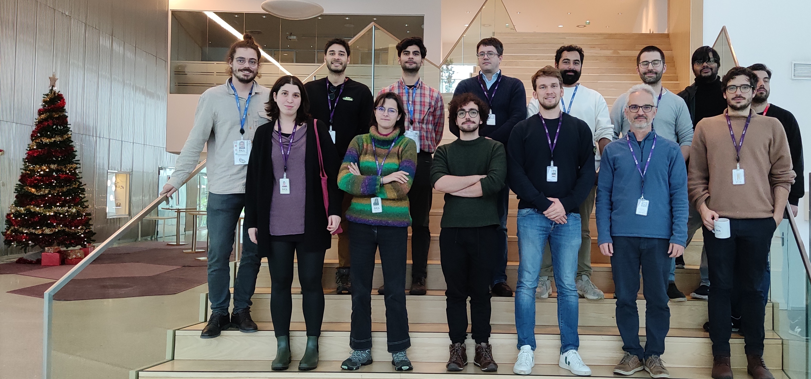

2nd INL–IT Quantum Computing Workshop
6th–7th Dec 2023 @ INL, Braga
Workshop bringing together researchers from the Quantum and Linear Optical Computation (QLOC) group at INL
and the Physics of Information and Quantum Technologies (Lx) group at IT–Lisboa.

Location
Talks in Conference Room (turn left from front desk, next to auditorium)
Thursday from 16.00 (open slots / discussions): Guadiana Room
Wednesday morning: Vision Room (turn left from front desk and go upstairs) booked for discussions
Schedule
Wednesday 6th December
13.30–14.15
Ricardo Faleiro (IT–Aveiro)
Oblivious transfer from EPR-assisted QRACs
14.15–14.45
Alexandra Alves (INESC TEC, INL, U Minho)
Noise-resilient quantum amplitude estimation
14.45–15.30
Coffee (at INL cafeteria) and discussion time
15.45–16.15
Lorenzo Catani (INL)
What is nonclassical about quantum interference?
16.15–16.45
Rafael Wagner (INL, U Minho)
Certifying nonstabilizerness in quantum computing networks
16.45–17.15
Som Kanjilal (INL)
Sufficient conditions for quantum advantage in random access code protocols with two-bit states
17.00–19.00
Coffee and discussion time
20.00
Workshop dinner (details TBC)
Thursday 7th December
10.30–11.15
Emmanuel Zambrini Cruzeiro (IT–Lisboa, IST)
Unanimous Bell inequalities
11.15–12.00
Coffee break (cafeteria)
12.00–12.30
Pedro Mendes (IT–Lisboa, IST)
Towards practical free-space quantum communication
12.30–13.00
José Senart (IT–Lisboa, IST)
Physical unclonable functions for quantum communication
12.30–14.30
Lunch break
14.30–15.00
Leonardo Novo (INL)
Boson bunching is not maximized by indistinguishable particles
15.00–15.30
Rui Soares Barbosa (INL)
Overlap polytopes: witnessing coherence, nonlocality, and contextuality
15.30–16.00
Ernesto Galvão (INL)
Bargmann invariants
16.00–16.30
Coffee break
16.30–18.30
Open slots / discussion time
Photos
Stairs

Emmanuel's talk

Dinner